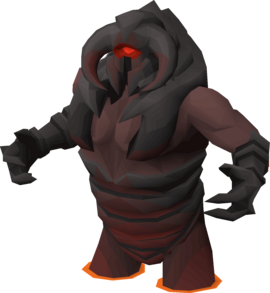
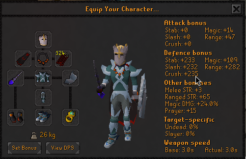
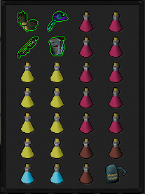

Progression Dotplot
Every dot represents an attempt. Hover over dots to inspect. Click a dot to pin details.
Filter by Category:
An interactive chronicle of 41 attempts to defeat TzKal-Zuk. Huge thanks to Inferno Trainer Simulator, Gabijooj and Renato for support.

Every dot represents an attempt. Hover over dots to inspect. Click a dot to pin details.
The gear and inventory configurations used to conquer the final wave.

Mainly range with Tormented/barrows gauntlets, Kodai wand and imbued Zamorak cape is more than enough mage bonus to freeze nibblers.

3 Prayer Regeneration potions are mandatory, 8 Saradomin Brews, 2 Armadyl Brews, Rest Restore. Bring Ice and Blood Barrage. Blowpipe with dragon darts.